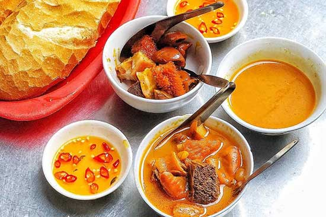
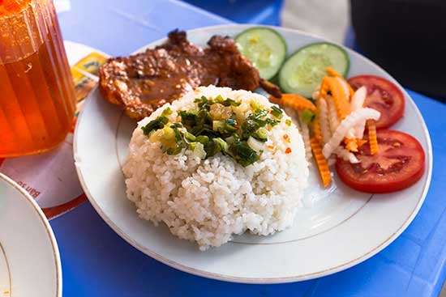
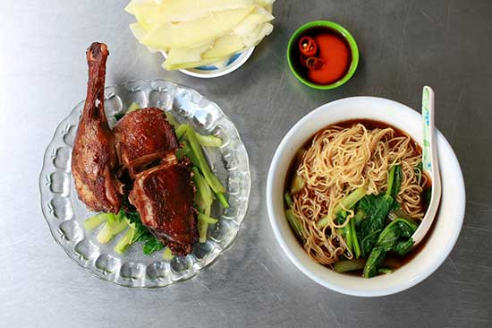

Lịch sử ra đời của TP Hồ Chí Minh
Khi giới thiệu về thành Phố Hồ Chí Minh (tên gọi cũ là Sài Gòn) ai cũng phải tự hào với một thành phố lớn
nhất Việt Nam về dân số và kinh tế, đứng thứ hai về diện tích. Vùng đất này ban đầu được gọi là Prey
Nokor, sau đó được hình thành nhờ công cuộc khai phá miền Nam của nhà Nguyễn. Năm 1698, Nguyễn Hữu Cảnh
cho lập phủ Gia Định, bắt đầu đánh dấu cho sự ra đời của thành phố. Khi người Pháp tiến vào Đông Dương,
để phục vụ công cuộc khai thác thuộc địa, thành phố Sài Gòn được thành lập.
Dần dần thành phố nhanh chóng phát triển, trở thành một trong hai đô thị quan trọng nhất của nước Việt
Nam. Cùng với Phnom Penh của Campuchia, Sài Gòn được người Pháp mệnh danh là Hòn ngọc Viễn Đông, nổi bật
nhất trong số những thuộc địa của thực dân Pháp. Sài Gòn cũng là thủ đô của Liên bang Đông Dương giai
đoạn ở 1887 – 1901 (về sau Pháp chuyển thủ đô Liên bang Đông Dương ra ngoài Hà Nội).
Năm 1949, Sài Gòn trở thành thủ đô của Quốc gia Việt Nam – một chính thể thuộc Liên bang Đông Dương,
sau
này là thủ đô của Việt Nam Cộng hòa. Đến năm 1955, Việt Nam Cộng hòa được thành lập, Sài Gòn khi đó
là
thành phố lớn nhất tại miền Nam Việt Nam đã được chọn làm thủ đô với tên gọi chính thức Đô Thành Sài
Gòn. Kể từ đó, thành phố này trở thành một trong những đô thị quan trọng của miền Nam Việt Nam.
Sau khi Việt Nam Cộng hòa sụp đổ trong sự kiện 30 tháng 4 năm 1975, lãnh thổ Việt Nam được hoàn toàn
thống nhất. Ngày 2 tháng 7 năm 1976, Quốc hội nước Việt Nam thống nhất quyết định đổi tên thành phố
Sài
Gòn thành Thành phố Hồ Chí Minh (TP HCM ), theo tên vị Chủ tịch nước đầu tiên của Việt Nam Dân chủ
Cộng
hòa.
Thành phố Hồ Chí Minh có gì hấp dẫn
Các món ăn đường phố hấp dẫn
Khi giới thiệu về thành phố Hồ Chí Minh chắc chắn không thể bỏ qua các món ăn đường phố nổi tiếng. Nền
ẩm thực độc đáo với các món ăn đa dạng hứa hẹn sẽ mang đến cho bạn những trải nghiệm ấn tượng nhất, Các
món ăn ngon có thể nhắc đến như:
Phá lấu
Đây là món ăn đường phố Sài Gòn luôn là món ăn được rất nhiều thực khách yêu thích. Phá lấu được làm
từ
bao tử (dạ dày), ruột non, phổi, gan, tim,… sau đó tẩm ướp thêm các loại gia vị, chiên vàng rồi luộc
lại
cho thật mềm. Đồng thời, kết hợp thêm nước cốt dừa trong quá trình nấu tạo nên vị ngọt và béo cho
nồi
nước hầm. Khi ăn phá lấu, bạn có thể dùng kèm thêm bánh mì hoặc dùng không cũng đều rất ngon.

Bột chiên
Bột chiên được xem là một trong những món ăn đường phố phổ biến ở thành phố Hồ Chí Minh. Với công thức
chế biến cực kỳ đơn giản, chỉ cần bột, trứng, đu đủ bào sợi và hành lá là đã có ngay một địa bột chiên
thơm ngon rồi. Món ăn này thường được ăn kèm cùng với nước tương, ớt và tương ớt để làm tăng thêm hương
vị đậm đà, béo ngậy. Nếu bạn có dịp đến đây tham quan vào những ngày đông lạnh thì đừng quên thưởng thức
món bột chiên hấp dẫn này nhé.
Cơm tấm
Cơm tấm là món ăn đặc sản mỗi khi giới thiệu về thành phố Hồ Chí Minh. Cơm tấm không chỉ được xem là
món
ăn sáng mà còn được xem là món ăn quen thuộc cả bữa trưa, chiều tối nữa. Gạo được sử dụng để nấu cơm
tấm
là loại gạo tấm, hạt gạo vụn có giá thành rẻ nhưng chất lượng thì lại rất cao. Một đĩa cơm tấm
thường sẽ
có trứng ốp la, sườn nướng, chả trứng, rau củ,…tùy vào phần bạn gọi.

Hủ tiếu
Hủ tiếu là một món ăn đường phố hấp dẫn mang phong cách đặc trưng riêng của mảnh đất Nam Bộ. Món ăn này
thường bị nhiều người nhầm lẫn với món phở nổi tiếng ở miền ngoài. Món này được chế biến từ sợi hủ tiếu
mềm kết hợp với nước dùng nấu từ xương thịt, hòa quyện cùng chút gia vị đặc biệt. Khi thưởng thức hủ
tiếu, bạn nhớ ăn kèm thêm chút rau sống để món ăn tăng thêm hương vị nhé.
Mì vịt tiềm
Nếu như có dịp ghé đến thành phố Hồ Chí Minh tham quan thì bạn nhất định phải ăn thử món mì vịt tiềm
nổi
tiếng của người Hoa nhé. Để tạo nên một tô mì vịt tiềm thơm ngon người chế biến phải sử dụng những
sợi
mì nhỏ, dai, khi chần sẽ không bị nhớt hay bị bở.
Thêm vào đó là sự kết hợp của đùi vịt to, mềm, da vàng rộm, chan thêm chút nước dùng đậm đà là có
một
bát mì vịt tiềm hấp dẫn rồi. Để tăng thêm hương vị cho món mì vịt tiềm, thực khách có thể ăn kèm
cùng
với các loại rau sống, đồ chua, thêm chút sa tế nữa nhé.

Bánh mì chảo
Bánh mì chảo được xem là một trong những món ăn vặt đường phố ở thành phố Hồ Chí Minh được rất nhiều bạn trẻ
yêu
thích. Mỗi chảo thường có ít nhất từ 3 đến 7 nguyên liệu chính gồm có: trứng gà, chà bông, chả lụa, xúc
xích,
xíu mại, thịt ba rọi muối, thịt bò,…Khi ăn hòa bạn sẽ cảm nhận được độ bùi béo của các nguyên liệu hòa quyện
cùng một ít nước sốt đậm đà, dùng kèm với bánh mì, rau xà lách. Tuy đây chỉ là một món ăn đơn giản nhưng nhờ
cách chế biến độc đáo, tài tình đã khiến bao thực khách ăn một lần là nhớ mãi.
Điểm du lịch thu hút du khách
Khi giới thiệu về thành phố Hồ Chí Minh đến du khách bạn đừng quên nhắc đến các điểm tham quan, du lịch nổi
tiếng nhé! Ở đây có rất nhiều khu vui chơi, điểm đến hấp dẫn, độc đáo như: Dinh Độc Lập, Nhà thờ Đức Bà, Chợ
Bến
Thành, Nhà hát Lớn Thành Phố, Bưu điện thành phố Hồ Chí Minh, Bảo tàng Phụ nữ Nam Bộ, Bến Nhà Rồng, Bảo tàng
tranh 3D Art in us, Hẻm Bia: Lost in HongKong, Đường sách Nguyễn Văn Bình,…
Ngoài ra còn có rất nhiều địa điểm vui chơi hoạt động cả vào ban đêm như: Phố đi bộ Nguyễn Huệ, phố Tây Bùi
Viện, cầu Ánh Sao Sài Gòn, Landmark 81 Sài Gòn,…Nếu trong quá trình tham quan có gì không biết thì bạn hoàn
toàn
có thể hỏi người dân địa phương, họ sẽ hướng dẫn nhiệt tình cho bạn luôn.
Trên đây là một vài thông tin cơ bản mà chúng tôi muốn giới thiệu về thành phố Hồ Chí Minh tới bạn đọc. Hy
vọng
rằng những thông tin trên sẽ giúp cho bạn có thêm nhiều hiểu biết, nhiều kiến thức mới lạ về thành phố Hồ
Chí
Minh nhé. Từ những thông tin đó hy vọng bạn sẽ có hành trình khám phá mảnh đất Sài Gòn hoa lệ ý nghĩa nhất
nhé!